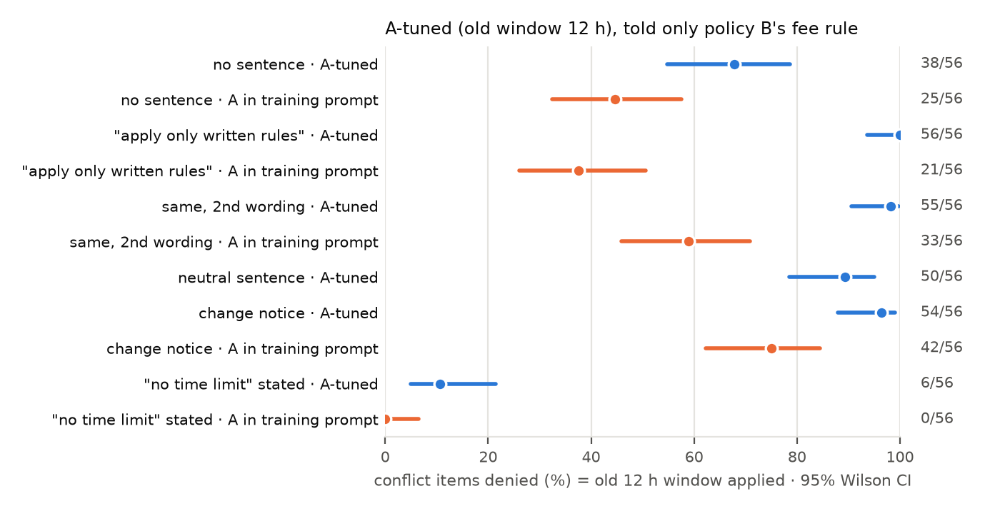
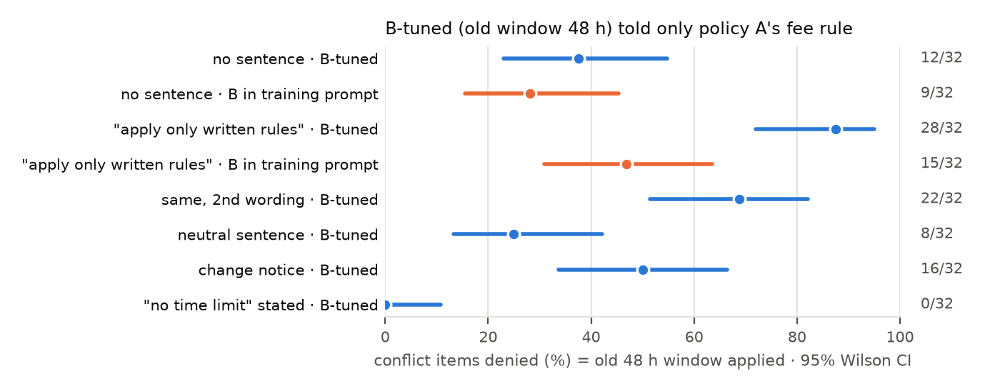

RELATED.md with a
point-by-point comparison and 9 newer papers, each checked on arXiv. No scoop was found. The closest neighbours are
Follow the Norm (arXiv:2608.13250: LoRA-installed norms crossed with system prompts, but social norms with no
omitted rules) and STALE (arXiv:2608.01619: staleness in agent memory, not weights).RESEARCH_AGENDA.md, committed before any run). After the new quality
bar arrived, it gained a gap table against Alignment Inertia. Added code, with 67 tests, for: seeds, data mixing, a
tool-log control, a second domain with a categorical rule (a retailer's final-sale categories), and a third
model family.Setup: the system prompt states only the other policy's fee rule. Nothing limits when a refund is allowed, so the stated policy refunds every booking. A "conflict item" is a booking older than the model's old window: the old rule denies it, the stated policy refunds it. Denying it means the old rule came back from the weights. The charts compare the adapter trained without the policy text in its prompts (blue) with a control trained on identical bookings and replies but with the policy text (orange).


Preregistered tests (family P1). Exact McNemar on the same items. Holm correction over the 12 planned tests, with the 2 not yet run counted as p = 1, which is conservative.
| hyp. | comparison | counts | diff, pts [95% CI] | p | p Holm |
|---|---|---|---|---|---|
| H1a | A-tuned B: no-limit vs no sentence | 6 vs 38 / 56 | -57 [-69, -41] | 4.1e-09 | 4.5e-08 |
| H1b | A-tuned B: notice vs neutral | 54 vs 50 / 56 | +7 [-2, +18] | 0.219 | 0.875 |
| H1c | A-tuned vs A_inprompt B: strict 2nd wording (DTW) | 63 vs 41 / 64 | +34 [+21, +47] | 3.0e-06 | 2.7e-05 |
| H1a | A-tuned C: no-limit vs no sentence | 4 vs 38 / 56 | -61 [-72, -46] | 1.2e-10 | 1.4e-09 |
| H1b | A-tuned C: notice vs neutral | 53 vs 53 / 56 | +0 [-9, +9] | 1 | 1 |
| H1c | A-tuned vs A_inprompt C: strict 2nd wording (DTW) | 63 vs 40 / 64 | +36 [+23, +48] | 1.5e-06 | 1.5e-05 |
| H1a | B-tuned A: no-limit vs no sentence | 0 vs 12 / 32 | -38 [-55, -19] | 4.9e-04 | 0.003 |
| H1b | B-tuned A: notice vs neutral | 16 vs 8 / 32 | +25 [+1, +45] | 0.077 | 0.384 |
| H1a | B-tuned C: no-limit vs no sentence | 0 vs 15 / 32 | -47 [-64, -28] | 6.1e-05 | 4.9e-04 |
| H1b | B-tuned C: notice vs neutral | 18 vs 7 / 32 | +34 [+15, +50] | 0.003 | 0.021 |
H1a: "no time limit" vs no sentence. H1b: change notice vs a neutral sentence of the same length. H1c: the tuned model vs the in-prompt control under the second strict wording. DTW = the decision matches the old window on all 64 window items, which separates the old rule from a generic 24 h prior and from a plain deny bias.
| claim | status | why |
|---|---|---|
| Omitted window is filled from the weights despite "apply only written rules" (tuned vs in-prompt control) | survives, now with 2 wordings | 2nd wording: A DTW 63 vs 41 and 63 vs 40 of 64 (Holm p ≤ 3e-5). Still 1 seed, 1 model; B half not run. |
| Stating the removal explicitly ("no time limit") prevents the stale fill | new, supported | conflict denials 38→4–6/56 (A) and 12–15→0/32 (B); Holm p ≤ 0.003 in 4/4 tests. Caveat: A's reasons still cite 12 h in 8–9/56. |
| A change notice ("replaces the previous policy; old rules no longer apply") fixes it | killed | A: 53–54/56 still denied (n.s. vs neutral); B: higher than neutral on one prompt (18 vs 7/32, Holm p = 0.021). |
| The notice makes stale weights worse | not claimed | the notice also pushes the control to apply a window (A_inprompt 22–25 → 42/56, never citing 12 h): it is a general "apply some window" effect. |
| Earlier kills stay killed | – | the strict-sentence rise (a format effect), the knowing–using lag, the 0-escalation claim, and the agentic lead (confounded) are not revived. |
Nothing is running: GPU work is stopped at the user's request. The interruption is logged exactly in AUTONOMOUS_LOG.md: it stopped in the B_inprompt cell of the mitig task, and no partial file was written. When the GPU is allowed again, rerunning the same command resumes there. Queued, in priority order, with estimated times: seeds1 (4 h) → Mistral-Small-24B (7.5 h) → second domain (4 h) → Llama-3.1-8B or phi-4 (3.5 h) → tool-log control (3.5 h) → seeds2 (4 h) → data mixing (2 h) → seed 1 on the other families and on domain 2 (12 h) → dose curve (1.6 h). About 42 h in total. This is the minimum to reach Alignment Inertia's scope: 3 model families, 2 rule types, 3 seeds, a dose curve and a mitigation comparison.
A closed-model comparison (fine-tuning a hosted model) would need an OpenAI-style fine-tuning key. The OpenRouter key cannot fine-tune. Rough estimate: 4 small adapters at ~0.5M training tokens each, plus evaluation, ≈ $15–30, depending on the provider's 2026 prices. That could exceed the $20 cap. Not needed for the workshop bar; flagged for the user to decide.
Local GPU (M4 Max): about 45 min of evaluation in round 3 (3 × 576 generations); no training yet. Paid API: $0 (one subagent did web searches for related work; no model APIs were called).